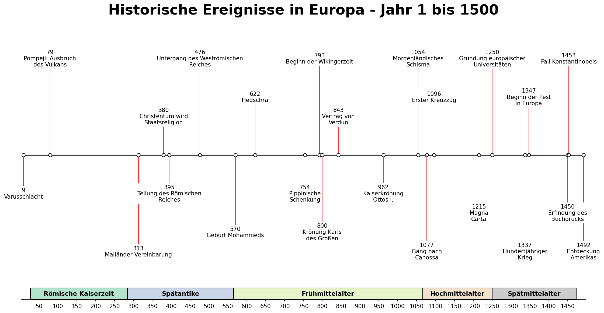

Europa · 1 bis 1500
Historische Ereignisse
Eine interaktive Zeitreise vom Römischen Reich bis zum Ende des Mittelalters.
23 Ereignisse
Ein Ereignis anklicken, um mehr zu erfahren.
Keine passenden Ereignisse gefunden.
Ursprüngliche Grafik anzeigen
